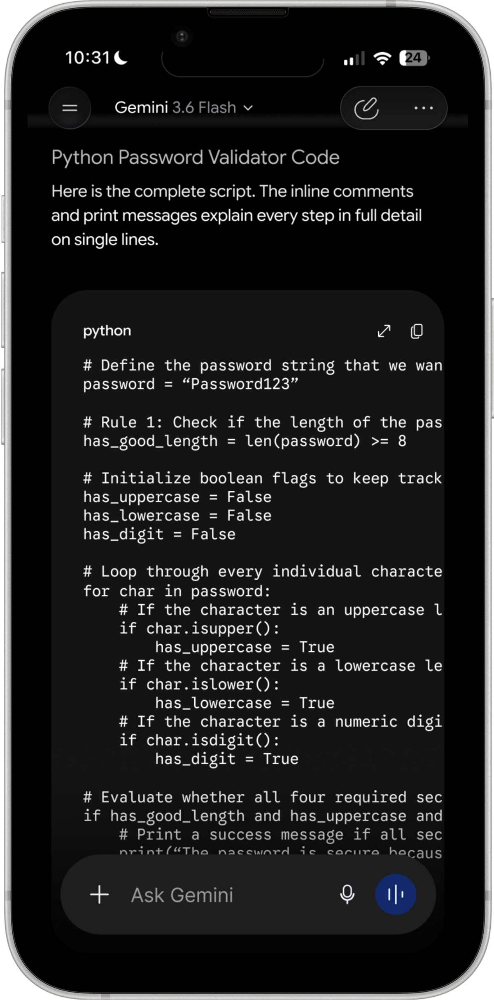
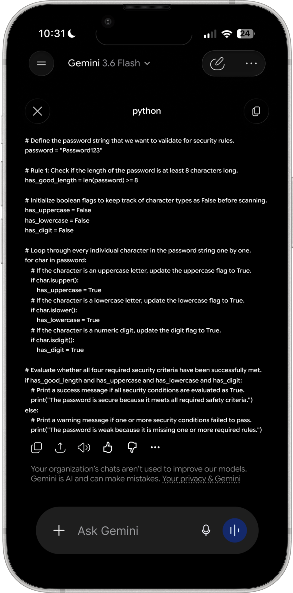
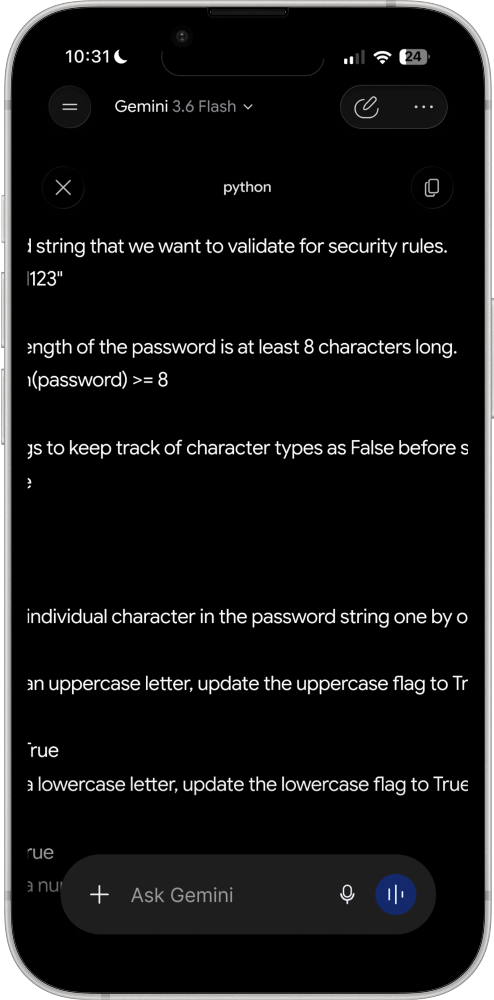
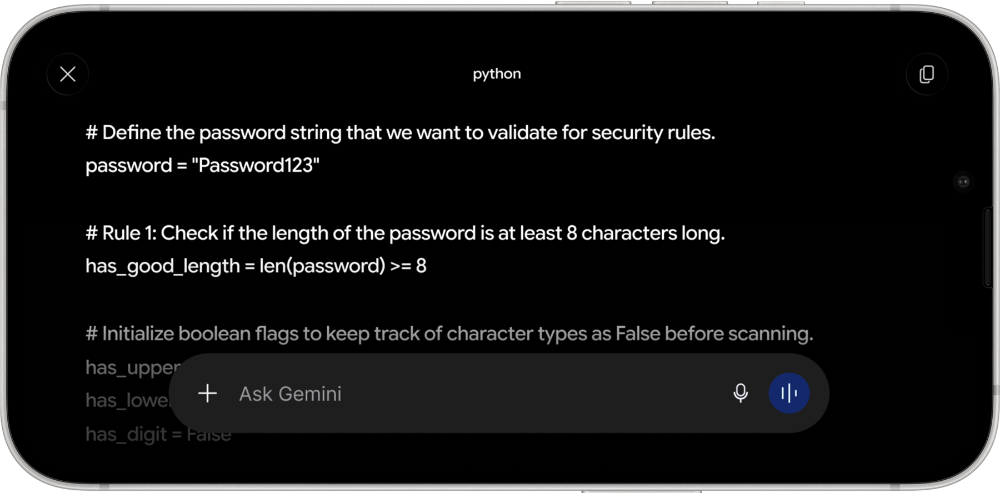

A redesign of the Google Gemini home screen for iOS, built on top of a full recreation of the app. Rebuilding it first is what let me tell Gemini's deliberate constraints apart from its unused space, and the redesign replaces the generic prompt row with two suggestion stacks that read the time of day and the work already in progress.
Gemini can hold a long technical conversation, read a photograph, and write working code. Then you open it and get your first name, a text field, and a row of suggested prompts that would look identical on anyone else's phone. The assistant is genuinely capable. The screen you meet first uses none of that capability.
I recreated the app end to end before changing anything. That turned out to matter more than I expected, and not because it made the mockups accurate. Redrawing an interface at full size forces you to work out what every decision is buying, and several of the things I had listed as problems turned out to be trades Gemini had already made on purpose. The redesign is what was left once those were off the table.
Gemini does not follow Material Design. It runs on its own design kit, which meant almost nothing could be pulled from a library and the recreation became the largest single piece of work in the project. None of it appears in the redesign. All of it had to exist before the redesign could be measured against anything real.
Gemini uses Google Sans Flex, which has rounded terminals rather than sharp ones. It reads as Google's answer to SF Pro Rounded. I drew the characters I needed as vectors instead of substituting something close, because a near miss on the type is the first thing that makes a recreation look like a recreation.
The icon set is Gemini's own. I rebuilt each one rather than swapping in a standard equivalent, since the corner rounding and the stroke weight are most of what makes the interface feel like this product and not a generic one.
Apple's materials kit does not carry either of the ones actually on my phone, so both were built from scratch. They are the furniture nobody looks at, and they are also the reason a screenshot of the recreation passes for a screenshot of the app.
The flow below runs left to right in the order a session happens, with the redesigned home screen sitting in its place so the whole thing reads as one product rather than a rebuild and a proposal kept apart. It follows a single thread: a beginner asks what a Python if statement does, gets a structured answer with working code, and then tells the assistant the formatting was wrong.


Scroll or drag sideways to follow the flow
These are the three places where my first reading was wrong. In each case I had written down a problem, and in each case working out what the alternative would actually cost turned the problem into a trade I would have made the same way.
The bar is pinned to the bottom at all times, and it is opaque, so it permanently covers a strip of whatever is behind it. In a long code block the last lines sit underneath it. That looked like a straightforward cost paid on every screen for no visible return.
The alternative is a bar that scrolls away with the conversation, and that means every follow-up starts by scrolling to the bottom to find the field again. Asking a follow-up is the single most common thing a person does after reading an answer. Gemini is trading a permanent small occlusion against a step removed from the most frequent action in the product, and on those terms the fixed bar is clearly the cheaper of the two.
Nothing on screen says the keyboard can be pushed away. There is no handle, no chevron, no label. Judged purely on discoverability it fails, because a first-time user has no way to learn the gesture from the interface itself.
The keyboard covers close to half the display, and any visible control for dismissing it would have to live in exactly the space the dismissal is trying to give back. A permanent affordance would be paid for in every session in order to help the first one. The gesture is also carried in from the rest of iOS rather than taught here, since Mail and Messages behave the same way, and because it tracks the finger continuously it doubles as a way to peek at what is behind the keyboard without committing to closing it.
A code block that needs horizontal scrolling looked like an obvious failure. You cannot read a line without dragging it into view, and the line you want is often the one furthest off screen.
The alternatives are wrapping and shrinking, and both damage the code. Indentation carries meaning in Python, so a wrapped line stops being safe to read as written. Shrinking to fit runs into the minimum text sizes accessibility guidelines set, which is a floor you cannot design underneath. Gemini is choosing to keep the code honest and make the reader work for it, which for code is the right way round.
The overflow was the first thing I wanted to fix, and I built the fix before I questioned it. A control on the code block opens it fullscreen, where the same script gets the whole width of the phone, the chat input is still reachable underneath, and the reader can zoom into a particular part of the script.
It helps, and it does not solve the problem. A long line is still a long line. Past a certain length you are panning again, only now with more of the line visible at once. That is a better version of the same compromise rather than a different answer to it.



The next thing I explored was letting the phone turn. Landscape gives a long line the wide edge of the display, so the eye travels down the script instead of sweeping left to right and back again on every line. I built it, and I still think it is the better way to read code on a phone.

I did not keep it. The question I had not asked was who reads code on a phone in the first place. Almost nobody does it by choice. People write and review code at a desk, and the mobile case is checking a snippet or looking something up, not reading a script end to end. Rotation is a real improvement to a situation that hardly arises.
Spending the redesign there would have meant solving the problem I happened to notice rather than the problem the product actually has. Setting it aside is the decision I am most confident about in this project, and it is the one that pointed me at the screen everybody sees instead of the one a few people reach.
So I went back to the screen people see most, which is the one before any conversation exists. The greeting sits in the middle of the display and almost everything around it is empty. A first-time user is being asked what they want from a product whose range they have no way to judge, and the suggestions offered to help are general enough to apply to anyone.
I also watched classmates open their assistants rather than asking them how they use them. Almost nobody read the suggested prompts. People went straight to the field and typed, or into the chat history to find a thread they had already started. The most valuable space on the screen was being scrolled past on the way somewhere else.
The suggestions are general enough that reading them costs more attention than typing the question already in your head.
People came back to a thread they had already started, but resuming one meant remembering it existed and then going to look for it.
The app already knows the hour, the location, and the last conversation. None of that reaches the first screen.
The dead space is the opportunity. It is the one part of the app where nothing is being traded away for anything, which is what made it worth redesigning when the code view was not.
The greeting stays. Underneath it, instead of one row of generic prompts, there are two labelled stacks. The left stack reads the moment, meaning the time of day, the weather and where you are. The right stack picks up work already in progress and offers a way back into it. Each stack holds four cards and you swipe through them, with dot indicators showing your position in the set.
Both stacks had to earn the space they took from the text field, so each card carries a reason rather than a category. The evening card does not say "restaurants near you", it names Shibam Coffee on Centre Avenue and tells you it closes at eleven. The work card does not say "recent chats", it names the Python thread and the specific thing left to learn in it. A suggestion is only worth reading if it is more specific than the question you were already going to type.
The decision I went back and forth on longest was the surface of the cards themselves. A flat fill would have been easier to read and would have sat unambiguously on top of the screen. It also fought with the gradient Gemini already runs behind the home screen, and it made the cards look like objects pasted onto the interface rather than part of it.
The glass treatment lets that gradient stay visible through the card, so the stack reads as a layer of the screen it is sitting on. It is the harder of the two to keep legible, and it is the one that makes the addition feel like it belongs to Gemini rather than to me.
These three states are the same screen at three moments. The evening stack moves from late-night coffee to dinner nearby while the work stack stays on the Python thread, and then the work stack moves on to the study app project with its open questions. Neither waits for the other, which keeps the screen from reading as a slideshow with one hand on the controls.
The most useful thing this project taught me was how to argue against myself. The fullscreen code view was a real improvement, I liked it, and it was still the wrong thing to spend a redesign on. Noticing a problem and establishing that the problem is worth solving are two separate tests, and I had been treating them as one.
Rebuilding the app first is what made that judgement possible at all. Until I had drawn the input bar, the keyboard and the code block at full size, I was reacting to Gemini's decisions rather than understanding what each one had bought. Three of the things on my original list of problems came off it that way, which is a better outcome than three more features would have been.
If I kept going I would work on what happens when the context is wrong. A suggestion that misreads the moment is worse than no suggestion at all, and I never designed the case where a card is simply unhelpful, or how someone would say so and have the screen learn from it.